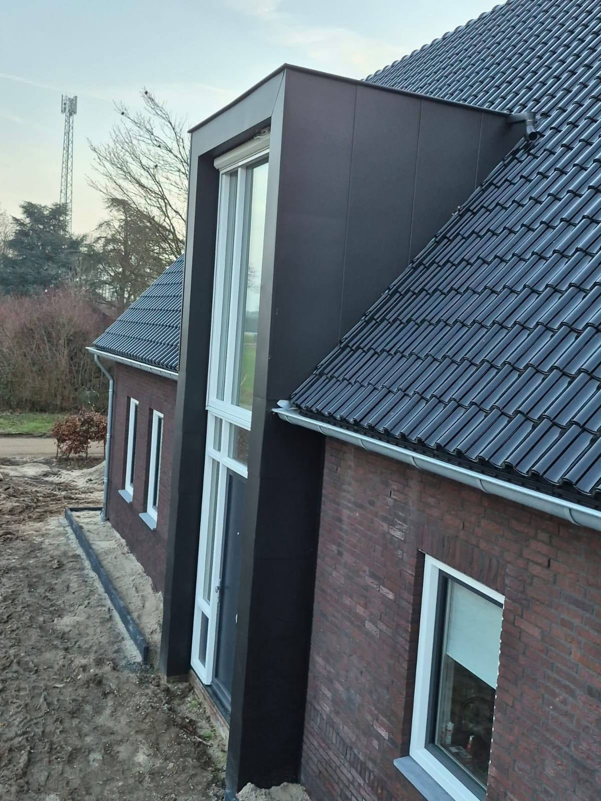
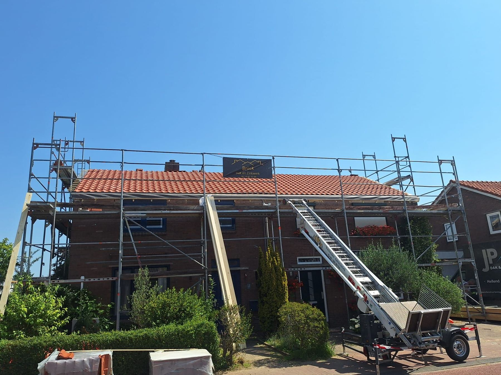

- Nicky komt zelf langs
- Eerlijk advies, duidelijke prijs
- 5,0 op Google
Wat we
voor je doen
Wat we doen
We leggen, vervangen en repareren platte en hellende daken. Op platte daken werken we met EPDM en bitumen, op hellende daken met dakpannen. Daarnaast maken we zinkwerk: dakgoten, boeidelen en de afwerking van dakkapellen.
Eerst kijken, dan een prijs
Lekt er iets, of wil je je dak laten isoleren? Nicky komt langs en bekijkt wat er nodig is. Daarna krijg je een offerte met de materialen en de prijs, zodat je vooraf weet waar je aan toe bent.

Zo gaan we te werk
Van de dakscan tot het moment dat het werk klaar is, heb je met Nicky te maken. Zo ziet dat eruit.
- {{ st.num }}. {{ st.title }} {{ st.text }}

Wie het advies geeft,
doet ook het werk
Brück Dak en Zinkwerk is het bedrijf van Nicky van Brück uit Ooij. Hij komt zelf kijken, maakt de offerte en staat zelf op je dak. Je hoeft dus niet steeds aan iemand anders uit te leggen wat er aan de hand is.
5,0
Google-beoordeling10 jaar
Garantie op het werk6
Specialismen op en rond je dak1
Vast aanspreekpuntEerlijk advies
Alleen wat je dak echt nodig heeft, met een duidelijke prijs.
1 vast aanspreekpunt
Nicky komt zelf langs en doet het werk ook zelf.
Lokaal uit Ooij
Een dakdekker uit de buurt, in de gemeente Berg en Dal.
5,0 op Google
Gemiddelde score van klanten op Google.